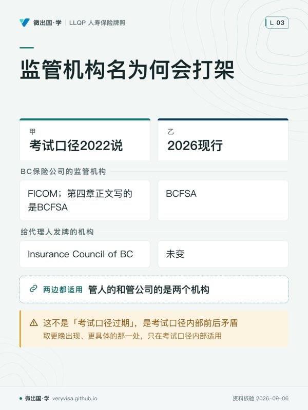

这一节是 LLQP 伦理与职业实践（普通法）模块的第一章，也是整个模块的地基：它回答「一份寿险合同凭什么有效、谁有权签、出了事按哪部法算」。读者有两类——正在备考的人，以及已在 BC 执业、需要当场判断「这份授权书我能不能受理」的代理人。
考纲位置：CISRO 2015 版考纲把伦理模块切成两块，能力组件一「把保险与年金合同的法律层面融入执业」占 60%，组件二「规范寿险代理人活动的规则」占 40%（CISRO）。本章属组件一的入口。这一场考试 25 题（记 20 分）、75 分钟、四选一、60% 及格（Insurance Council of BC）；全国首次通过率 80%，是四个模块里最高的（CISRO）。
学完这一节，你应该能做三件事：说得出一条保险规则该去哪一层法律里找；判断眼前这个人有没有能力签这份合同、有没有可保利益；答出授权书、遗产法与家庭法各自会在 BC 的哪一步撞进你的业务。
ℹ️
本页的条号分两种成色，请分开看
凡标了 BC《Insurance Act》具体条号的地方，都是本课 2026-09-04 回官方法律数据库逐条核对过的； 法规结论限于已引用条文及其适用条件；考试口径历史口径与现行要求分别注明。
一、制度设计与底层逻辑：先分清你在问哪一层
1. 法律渊源三层
加拿大的保险法不是一部法，是三层叠起来的东西。考试口径开篇把渊源列成三条：宪法、普通法（Common Law）、成文的立法与法规。三者不是并列关系，是上下压制关系——宪法压过一切，联邦与各省议会通过的法律都必须与它相符。
| 层 | 是什么 | 在寿险里管什么 | 冲突时谁赢 |
|---|---|---|---|
| 宪法 | 《宪法法案 1867》划分联邦与省的立法权；《宪法法案 1982》带来《权利与自由宪章》 | 保险合同通常属于省的财产与民事权利权限；联邦注册、税务等另受联邦法约束（考试口径援引 Canadian Western Bank v. Alberta, [2007] 2 SCR 3） | 压过联邦法与省法 |
| 普通法 | 法官在个案里发展出来的判例法，源自英国 | 合同、民事过失、财产、信托与代理至今主要由普通法管 | 成文法一旦生效，与之冲突的普通法规则随之改变 |
| 立法与法规 | 各省《Insurance Act》及其法规、各省金融机构监管法、联邦的税法反洗钱法隐私法 | 保险合同本身几乎全部已成文——各省把普通法规则写进了保险法 | 在其管辖范围内优先于普通法 |
推论立刻可用：想不起某条规则的出处时，先判断它属于哪一层。「受益人指定要不要书面」是成文法（BC s.59）；「代理人对客户负什么注意义务」很大程度上仍是普通法加监管规则；「省能不能立法管保险」是宪法。
普通法与魁北克民法的分野也在这里：普通法通行于加拿大除魁北克以外的所有地区，魁北克实行以《魁北克民法典》为基础的民法体系。这就是 LLQP 伦理模块分成「普通法版」与「民法版」两套考试的原因——不是翻译问题，是两套法律体系。你考的是普通法版，BC 属普通法省。
⚠️
「保险是省管的」不等于「联邦跟寿险无关」
宪法把保险法（合同怎么成立、受益人怎么指定、什么时候不可抗辩）划给省，但联邦仍从几条路径深度介入： 联邦注册保险公司的偿付能力、保单的税务处理、压在代理人个人头上的反洗钱义务，以及隐私、 电话勿扰、反垃圾邮件、基因不歧视。合同法归省，钱与行为的外围归联邦。
2. 为什么各省的保险法长得几乎一样
考试口径以统一法示范文本解释普通法各省保险立法的相似性。跨省客户仍须分别核对合同适用法、团体成员加入时居所、遗嘱与财产所在地，不能仅凭搬家日把全部权利切换到新省法。BC 寿险 Part 3 的适用范围见 ss.39–40。
3. 代理法：你在法律上是谁的人
「代理」（agency）在法律上是一种授权关系：委托人（principal）把权限授予代理人（agent），而授权的范围由委托人控制。考试口径把寿险这一侧写得很直白：在普通法省份与地区，保险公司与销售其保单的寿险代理人之间是委托人与代理人的关系；代理人代表保险公司向客户销售保险，而每个代理人权限的具体范围与限制，写在他与每家保险公司分别签署的书面合同里。
这一句决定了三件事。第一，你法律上代表的是保险公司，不是客户——这不意味着可以不管客户利益（监管规则与「公平对待客户」框架把大量义务压在你身上），但在合同法层面你是保险公司那一侧的授权延伸。第二，你的权限有边界，边界写在合同里——能做什么（收取投保申请、转交保费）与不能做什么（承诺承保结果、擅自变更条款、豁免核保要求），取决于那份代理合同，而越权的后果不会因为你是善意的就消失。第三，普通法上还有表见代理：如果保险公司通过自己的行为让客户合理相信某个代理人拥有某项权限，即便实际没有，公司仍可能被这个「表面上的授权」（apparent authority）约束——考试口径本章没有展开，本页把它标为通说而非考试口径。
再往下是三个身份的分工。独立代理人与两家或以上保险公司签约，业务通常通过总代理递交；专属代理人（也叫职业代理人或专属代表）只代表一家保险公司，或被合同、雇佣安排约束只能代表一家总代理或营销实体；寿险总代理（MGA） 是撮合代理人、客户与保险公司的中间人，协助代理人拿到与保险公司的合同（其中可以包括授予代理人代表保险公司行事的权限）、处理与跟踪业务、归集佣金、培训代理人、向保险公司提供市场行为合规支持。
⚠️
MGA 这个缩写在两个险种里指的不是同一种东西
寿险侧的总代理，核心是撮合与行政；而在普通财产与意外险那一侧， 同一个缩写指的是获保险人授权承保出单的批发中介（姊妹课的台账记为「MGA 一词两义」）。 你在 BC 跟总代理签的是分销与服务安排，不是承保权限——说反了会让人以为你能拍板承保。
代理行（agency） 是持牌的公司或合伙，必须至少有一名与该牌照同类别的持牌代理人；想通过雇佣、培训、监督其他代理人扩张业务，就要另外申请法人代理行牌照。考试口径点名六个要求代理行本身持牌的辖区——BC、阿尔伯塔、萨斯喀彻温、安大略、新斯科舍、纽芬兰与拉布拉多。还有一条对日常最有杀伤力的规则：代理行里凡是在招揽保险、接收投保申请、洽谈或促成保险、转递申请或保单、洽谈续保、收取保费、制作寿险演示表的雇员，都必须持牌。
✕
「我的助理只是帮我约个见面」——这句话已经踩线了
清单里第一项就是「招揽」。未持牌助理替你打电话给潜在客户、哪怕只是约时间谈保险， 性质上就是无牌招揽。官方公开样题有一道专考这个组合：直接致电潜在客户（要过电话勿扰名单那一关）、 让未持牌助理代打（无牌招揽）、改成群发电邮（要过反垃圾邮件法那一关）——这一章的规则是每天的动作规范。
4. 合同成立的要件，与保险独有的那一道额外门槛
普通法下一份合同要能被强制执行，考试口径的表述是：它必须由一方或多方以缔结有约束力协议的共同意思订立——常被形容为「意思一致」（meeting of the minds）；而合同的标的还必须符合被称为公共政策（public policy）的共同价值，考试口径举的例子是雇凶纵火骗火险赔款的约定违反公共政策而自始无效。
把通说与考试口径合起来，合同成立看四件事（四要件是普通法通说的归纳，不是考试口径原文的列举）：要约（客户递交投保申请）、承诺（保险公司核保后同意承保）、对价（客户付保费，保险公司承担风险）、缔约意图与缔约能力。
考试口径把行为能力单独拎出来讲，因为它是现场最常撞到的一件事：任何年龄的人订立任何合同都必须具有「法定行为能力」，它关系到能否作出有效的同意。判断标准不是懂不懂全部细节，而是能不能理解合同条款、并且明白自己正在缔结一份有约束力的协议。
ℹ️
法律没有设「老到不能签字」的年龄上限
考试口径明写：不存在一个被推定为丧失同意能力的最高年龄，所以一位 100 岁的老人仍被推定有缔约能力。 能力的判断是个案化的（他此刻能不能理解），不是年龄化的。 反过来，代理人也不能因为客户年纪大就默认要找家属签字——那同样是错的方向。
可保利益（insurable interest）限制把他人的生命作为投机标的。BC《Insurance Act》s.45(1)原则上使生效时缺乏可保利益的合同无效，但s.45(2)明确豁免团体保险及被保险人书面同意的情形；未满16岁时可由父母或代行父母职责者同意（s.45(3)）。可保利益与书面同意不能一概说成必须同时具备。
二、2026 现行政策与数字：BC 这一格具体填什么
1. BC 的两部法，管的不是同一件事
《Insurance Act》RSBC 2012, c 1 管合同——保单载明什么、可保利益、宽限期、复效、受益人指定、不可抗辩、免受债权人追偿、诉讼时效。《Financial Institutions Act》RSBC 1996, c 141 管人和机构——谁能在 BC 经营保险业务、代理人能不能回佣、能不能搭售、无牌经营怎么罚。两部法分工不同；BC 的《Insurance Act》里根本没有专门管代理人的一章。

下面的条号是本课 2026-09-04 逐条回 BC 官方法律数据库核对过的：
| 条号 | 管什么 | 关键规则 |
|---|---|---|
| s.42 | 保单必备条款 | 须载明被保险人、保险金额、保费、复效条件、退保选项等 |
| s.45 | 可保利益 | 原则上无可保利益则无效；团体险或被保险人书面同意有 s.45(2) 例外 |
| s.52 | 不可抗辩 | 生效满 2 年，善意未披露或误述不再使合同可撤销 |
| s.59 | 受益人指定 | 须以合同内指定或书面声明方式作出 |
| s.60 | 不可撤销指定 | 一经作出，未经该受益人同意不得变更或撤销 |
| s.61 | 遗嘱中的指定 | 即使遗嘱本身无效仍可生效；后指定优先于先指定 |
| s.65 | 免受债权人追偿 | 指定了受益人的，保险金不受投保人债权人主张 |
| s.76 | 诉讼时效 | 证据提交后 2 年内，或身故后 6 年内，取较早者 |
| s.77 | 保险人免责付款 | 主要办事处收到影响权利的书面文件之前，可依现有记录付款而免责 |
| s.82 | 付入法院 | 承认责任但存在互相争夺的索赔人时，可申请把款项交付法院 |
意外与疾病险在同一部法里另起一段，条文结构与人寿侧一一对应：诉讼时效 s.104、披露义务 s.111、不可抗辩 s.112、受益人指定 s.117、不可撤销指定 s.118、免受债权人追偿 s.124。
⚠️
不可撤销指定与普通指定分开判断
人寿 s.60(1) 本身要求不可撤销指定在被保险人在世时送达保险人在加拿大的总部或主要办事处；普通指定按 s.59 及声明定义判断。s.77 规定保险人收件前付款的免责，不等于所有未收件指定都无效。
2. 三列双口径之一：BC 的监管机构名，考试口径自己跟自己打架
| 判据 | 考试口径 2022 说 | 2026 现行 | 考场答 · 柜台做 |
|---|---|---|---|
| BC 保险公司的监管机构 | 本章的监管框架一览表写「Financial Institutions Commission of British Columbia」（FICOM）；而同一本书第四章正文写的是 BCFSA | BC Financial Services Authority（BCFSA），自 2019-11-01 起取代 FICOM（BCFSA、www2.gov.bc.ca） | 考场先辨题干年代：FICOM 仅能用于其任职时期的历史问题，现行机构答BCFSA。柜台：BCFSA 向保险公司签发经营授权 |
| 给代理人发牌的机构 | 第四章正文正确写 Insurance Council of British Columbia | 未变 | 两处都答 Insurance Council of BC——管人的和管公司的是两个机构 |
这不是「考试口径过期」，是考试口径内部前后矛盾：第四章正文写对了，第一章的一览表没跟着改，取更晚出现、更具体的那一处。
ℹ️
「考试口径内部打架取更晚更具体的」这条原则，只在考试口径内部适用
考试口径与现行法打架时不能用它——「更晚」在一本 2022 年的书里也还是 2022 年，那时唯一的解法是回官方现行源。 把这两种打架混成一种，是本课最贵的一类错误。
3. 三列双口径之二：未成年人投保的年龄规则对，引注错
| 判据 | 考试口径 2022 说 | 2026 现行 | 考场答 · 柜台做 |
|---|---|---|---|
| BC 成年年龄 | 19 岁（阿尔伯塔、曼尼托巴、安大略、爱德华王子岛、魁北克、萨斯喀彻温是 18 岁） | 未变，长青 | 两处都答 19 |
| 可自行投保的最低年龄 | 16 岁——为订立保单（但不是作为受领身故给付的受益人）之目的，年满 16 岁者有能力为自己投保 | 规则未变，长青 | 两处都答 16 |
| 这条规则的法条引注 | 本章脚注仍引《Insurance Act》RSBC 1996, c 226, s.72（人寿）与 s.110（意外与疾病） | 那是 2012 年重新编纂之前的旧编号；现行是 RSBC 2012, c 1，人寿侧对应条号逐字核对为 s.72——"未成年人 16 岁起有为自己订约的能力，但受益人权利除外"，全书其余数十处引注同样用新编号（BC Laws（King's Printer 官方合并本）） | 考试按题干辨订约能力与受益权。柜台：引法条写 RSBC 2012, c 1 s.72 |
16 岁与 19 岁之间须区分订约能力与受益人领款能力。17 岁可为自己投保，但在BC尚未成年。未满16岁由父母投保与自行订约不同。BC 未成年受益人的保险金依 s.88 以信托方式付给为该款指定的受托人，无受托人则付 Public Guardian and Trustee；不能直接套用考试口径的付入法院通则。
4. 授权书：文书类型与受益人权限要分别核
普通授权书（PoA） 由授权人签署，指定另一人（称为 attorney，即受托代理人）处理其业务与财产、代作财务与法律决定。关键限制：授权人一旦丧失心智能力，普通授权书即告终止。
持续授权书（Enduring PoA） 是加强版——授权人丧失能力之后仍继续有效。要成立它，文件必须妥善签署并写明两件事：受托代理人是在授权人仍有能力时即可行事、还是仅在其丧失能力后才行事；以及该代理权在授权人丧失能力后继续存续。财产类授权书按其条款可能签署即生效，也可能需要医生或能力评估人「触发」。受托代理人依法通常拥有处置授权人财产所需的全部权限，但不能代立遗嘱。
代表协议（representation agreement）可涵盖个人照护与医疗决定，s.7还允许日常财务管理，立法依据是《Representation Agreement Act》c 405——与管财产的 POA Act c 370 是两部独立的法，不是同一部法拆出来的两截。普通授权书与持续授权书写在同一部 POA Act 里（分属 Part 1、2），s.14 要求持续授权书写明丧失能力后继续存续，s.21 禁止代立遗嘱；代表协议侧 s.19.01 同样禁代立遗嘱（BC Laws（King's Printer 官方合并本）/04）。
| 判据 | 考试口径（全国通则）说 | BC 的现行例外 | 考场答 · 柜台做 |
|---|---|---|---|
| 受托代理人能不能变更人寿保单的受益人指定 | AMF 9e 2022 提到 BC 例外，未列完整现行条件 | BC《Power of Attorney Act》s.20 对持续授权代理人作出限定：变更本人已有受益人指定须法院授权；更新、替换或转换类似文书时，可依条件沿用本人有能力时指定的同一受益人；另建文书时的新指定限本人遗产。代签申请表不等于可任意换受益人。 | 考场核考试口径与题干；柜台核授权范围、法院命令和保司法务，不仅凭省份作答 |
| 考试口径为什么要设这条限制 | 因为若不限制，受托代理人只要把钱从一家金融机构转到另一家，就能变相撤销授权人原来作出的指定 | 同一逻辑在 BC 仍成立，法院授权和 s.20 的有限新指定条件限制代理人的决定权 | 这条「为什么」比结论更容易考——问的是制度目的，不是记忆 |
✕
持续授权书不能代替法院授权
考试口径的省际例外提示不构成任意改受益人的许可。BC 变更既有指定须法院授权；类似文书续办沿用指定、新文书指定遗产各有条件。先核文书与 s.20，再交保险人法务处理。
✕
接受客户的财产管理职务前先核利益冲突
受托代理人、遗嘱执行人或信托受托人的职责与保险销售不同。考试口径建议避免此类冲突；实务须核 Council 规则、保险人授权及自己的 E&O 合同，不能保证每份职业责任险都覆盖这些活动。
5. 公共保障层：需求分析的起点，不是背景音
需求分析必须先算「政府已经给了多少」再算缺口，而这些数字每年都在动。
加拿大退休金计划（CPP） 是强制缴费型，由缴费而非税收供款，雇主为雇员缴等额部分；超过最高可计提收入的部分不再产生缴费，所以高收入者必须另找退休保障渠道。可在 60 岁后领减额养老金或推迟到 70 岁领增额；符合年龄、缴费及严重且长期伤残条件的人可能领取伤残给付；严重指经常不能从事实质有酬工作，长期包括期限不定或可能致死（canada.ca）；另有身故与遗属给付；配偶间可分拆 CPP 做退休期收入分摊，婚姻破裂时给付也可作为财产分割的一部分被划转。2026 年：年度最高可计提收入 $74,600、起缴额 $3,500、最高可计提部分 $71,100（CRA / canada.ca）；第二层 CPP2 额外最高可计提收入 $85,000、费率 4%、劳资各最高年缴 $416（CRA / canada.ca）；伤残给付月度最高 $1,741.20（Government of Canada (ESDC)）；遗属给付 65 岁以下月度最高 $803.54、65 岁及以上 $904.59，一次性身故基本给付 $2,500，2025-01-01起符合条件可加 $2,500、最高 $5,000（canada.ca）；子女给付未满18岁或合资格全日制学生每月最高 $307.81，合资格非全日制学生最高 $153.91（Employment and Social Develo…）。
ℹ️
CPP 的第二层，考试口径完全没有
考试口径只讲到第一层的最高可计提收入概念，全书没有 CPP2——它是 2024 至 2025 年才落地的。 后果很具体：给一位年收入 $90,000 的客户算退休缺口，照考试口径公式算会低估政府这一层已经给了多少。 这是「考试口径没写错，只是它写在几年前」的典型形态。
OAS 与 GIS 与 CPP 相反：OAS 非缴费型，由政府以税收供款，OAS资格及金额涉及年龄、成年后居住时间和收入，OAS对领取人应税；GIS是给符合条件的低收入OAS领取者的免税补充金，金额另涉及婚姻及配偶领取情况。2026 年 7–9 月现行月度最高给付：OAS 65–74 岁 $751.97、75 岁及以上 $827.17；GIS 单身/丧偶/离异 $1,123.17、配偶在领全额 OAS 者 $676.09（Canada.ca（Employment and Soc…）——最高额按季度随物价指数调整；GIS个人金额通常每年7月依据前一年度收入重算，并可能因收入或家庭变化调整，报数字前先说清是哪个季度的快照，不要在客户面前报一个记忆里的数。
就业保险（EI） 为非因本人过错失业，以及因病、生育、育儿或照护重病近亲而无法工作的人提供临时收入支持；须先有最低数量的可保工作小时，自雇者不符合常规 EI 资格（这一点在给自雇客户做伤残险需求分析时是决定性的）。病假档现行最长 26 周、按收入的 55% 计、每周上限 $729，须提供医疗证明（Government of Canada (ESDC)）。
省这一层（BC）有三块。 车险：BC 与萨斯喀彻温、曼尼托巴、魁北克实行政府经营的计划，省方提供基本保障，私营公司竞争销售增值保障；考试口径专门澄清「无过错」不等于「不问过错」——谁造成事故仍要判定，真正的变化是被保险人向自己的保险公司主张医疗与收入替代给付。工伤补偿：省管、无过错、雇主强制缴款，代价是工人放弃起诉雇主的权利；BC 的工资损失给付大致为按计算所得净收入的 90%（WorkSafeBC）。医保与药品：13 个省与地区各自的计划在联邦《Canada Health Act》标准下协调，BC 覆盖医疗上必需的医生服务（BC 省政府），而不覆盖的清单正是私营健康险的空间——美容类非医疗必需服务、牙科（除特定情形外）、19 至 64 岁的常规验光、眼镜与助听器一类器具、处方药（BC 省政府）；BC 省医保保费已于 2020 年 1 月 1 日取消（个人每年最多省 $900、家庭最多 $1,800，BC 省政府）。联邦药品保险合作覆盖指定避孕及糖尿病药物，BC 双边协议公告为2025-03-06；Manitoba公告为2025-02-27，不能把BC称为首个签约省。实际药物与供应项目按省计划清单核对。
还有一条每天都在用的机制：给付协调（coordination of benefits）——夫妻各有团体计划时同一笔费用不能重复赔付，一个先赔另一个只补余额；私营保障只应处理省计划不覆盖的部分。
6. 联邦的另外几部法：撞到它们的频率比你想的高
| 判据 | 考试口径 2022 说 | 2026 现行 | 考场答 · 柜台做 |
|---|---|---|---|
| 适用哪部隐私法 | 联邦 PIPEDA 定下私营部门处理个人信息的基本规则；若某省已通过实质相似的法律，则该省法在本省优先适用，点名三省 | 口径不变。BC 的那一部是 PIPA（SBC 2003, c 63），现行有效；省内商业活动走 PIPA；个人信息跨省/跨境流动或联邦管辖机构业务仍受 PIPEDA 管辖（priv.gc.ca） | 考试按题干分省内、联邦企业及跨省跨境信息流；实务分别核PIPA与PIPEDA |
| 联邦隐私改革到哪一步 | 考试口径成文时尚无此议题 | 旧 Bill C-27 未成为现行法；官方 LEGISinfo 登记的新 Bill C-36 于2026-06-15一读，目前二读阶段（Parliament of Canada — LEGIS…）；PIPEDA 仍是联邦现行法（openparliament.ca / 交叉 Gowli…） | 考试口径未涉及，不据此预测试卷；提案未生效，实务按现有PIPA/PIPEDA范围处理 |
考试口径还给了一条最小化原则：只收集为完成一笔业务所必需且相关的信息；需求消失后，信息应以谨慎方式处置。 各省也设有隐私专员，职权与省或市级事务相关，尤其指向医疗信息。
反洗钱（PCMLTFA）：考试口径把代理人的位置说得很硬——保险产品可被用作财富的创造、储存与转移工具，所以报告可疑交易与涉恐财产是每一个保险代理人本人的责任，未报告者面临严厉的个人处罚乃至监禁，报告对象是 FINTRAC。现行：大额现金交易报告门槛 $10,000，并带 24 小时合并规则——同一人、或为同一人、或指向同一受益人的多笔交易在连续 24 小时窗口内累计达门槛同样要报（FINTRAC）；2025 年 10 月 1 日起新增「受益所有权差异报告」义务，报告实体在评估存在较高洗钱或资恐风险时须向联邦受益所有权登记处报告与登记记录不符之处——这一层考试口径完全空白。
⚠️
$10,000 不是「一笔」的门槛，是「一个窗口」的门槛
把 $18,000 拆成两次 $9,000 交，只要落在同一个 24 小时窗口内，照报不误。 反过来也要记住：判断要不要报，看的是交易本身落不落在规则范围内，不是金额大不大。 官方公开样题就有一道拿「金额不小、社保号暂缺」的退休储蓄计划场景诱你误报——而那类产品本身是豁免的。
电话与电邮营销须分别核CRTC电话营销规则、National DNCL与CASL。注册、非豁免呼叫订阅和企业号码规则各有适用范围；考试口径所列商业讯息同意及退订要求不能免除现行规则核对。CRTC官方检索摘录列退订最迟10营业日，但本页未读到完整网页原文，实际营销前请直接查CRTC指引与电话营销注册要求。
基因不歧视法（GNDA, SC 2017, c 3） 禁止以接受基因检测作为提供商品服务、缔结或维持合同的前提，也禁止强制披露检测结果；合宪性已由最高法院于 2020 年确认，本课核到的版本为 current to 2026-06-21（Justice Laws Website (Govern…）。
人权法限制歧视性保险服务。考试口径讨论合理且善意的区别，但是否适用BC例外须对照具体受保护理由、保险安排与法条；没有逐项核实前，不能说年龄、性别或健康定价一律合法。实务请查BC《Human Rights Code》现行条文并取得适用个案的专业判断。
三、实务流程：这一章的规则落到动作上是什么样
1. 坐下来谈之前，先过三道关
能力关：判断标准是他能不能理解条款、明不明白自己在签一份有约束力的合同，不是年龄也不是学历。年龄只在两处是硬线——BC 成年年龄 19 岁；为自己投保的最低年龄 16 岁，15 岁及以下由具备可保利益的父母以孩子名义申请。
签字权关：自然人自己签；合伙里普通合伙人可代表合伙签署，且每个合伙人对其他合伙人代表合伙订立的合同承担财务责任；公司要由签字高管代表签署，权限通常来自章程细则或董事会决议——所以投保申请常要求两名高管或董事签字。
可保利益关：先核 s.45(1)，再核团体险及书面同意例外；不能略过 s.45(2) 就判合同无效。
2. 接到「我持有授权书，我要改受益人」这通电话时
固定四步，一步都不能省。第一步问是哪一种文件——普通授权书在授权人丧失能力后已经终止，而客户此刻往往正是因丧失能力才需要人代办；你要确认它是不是持续授权书，文件里有没有写明代理权在丧失能力后继续存续。第二步取得公证真本——考试口径写的是：在接受一份声称的授权书所给出的指示之前，代理人应当向公证人取得该授权书的核证真本。第三步交保险公司审阅——你不是那个判断文件是否有效的人。第四步才判断这项指示本身能不能做。
🔧
「我先帮你办，文件回头补」是这一章最贵的一句话
授权书场景里，你面对的通常是一位已失去行为能力的客户和一位急着办事的家属，压力全在你这一侧， 而改受益人是不可逆的：钱付出去之后，觉得自己本该拿到的人只能去告保险公司和你。 这四步不是流程洁癖，是你唯一的自保线。
3. 每天都在跑的两条合规动作线
隐私线：只收集必需且相关的信息，用完按规矩处置；档案的存放与访问控制不是「万一被滥用」才算违规——考试口径举的案例形态是客户档案未上锁被盗，违规点在于信息安全措施缺失本身。反洗钱线：按法定触发点核实客户身份，受益人另核首次付款前及建档要求、识别受益所有人、判定第三方与政治公众人物；签单后持续监控业务关系；触发时按对应类型上报；机构层维护合规计划。义务主体是你本人，模板由谁提供不改变这一点。
4. 客户婚姻状况变化时，三部 BC 法同时进场
保险合同这一侧按《Insurance Act》ss.59–61核对受益人指定、变更与不可撤销权利，s.65的保护须区分保险金及生前合同权益。婚姻与抚养这一侧，BC《Family Law Act》s.170(e)明确允许法院在支持令中要求维持配偶或子女的寿险受益人指定并安排缴费（BC Laws）；协议、法院命令与保险人登记手续须逐一核查。身后事这一侧，《Wills, Estates and Succession Act》s.5处理无法确定死亡先后的一般情形，s.10设五日生存规则，但s.11明确把适用Insurance Act ss.83/130的保险金排除在这组规则之外（BC Laws）。遗产认证成本另按《Probate Fee Act》分档费和法院申请费计算。
四、2026 市场：一个 BC 寿险代理人日常会撞到的法律清单
本章讲的是法律框架，所以它的「市场」就是你实际会撞到的那几部法。下面每一条都能指回本页前面已核过的出处。
联邦四部。《Insurance Companies Act》：你几乎不会直接翻它，它决定你签约的公司在联邦层面受谁盯着财务稳健，出现在你回答「这家公司靠不靠谱」的时候。《Income Tax Act》：身故给付的税务地位、保单内投资收益的处理、企业持有保单的资本红利账户——它是你每一次产品推荐的隐含前提。PIPEDA 与 BC PIPA：第一次向客户收集健康信息、身份证件与受益人信息那一刻就开始适用，BC 省内商业活动走 PIPA（openparliament.ca / 交叉 Gowli…）。PCMLTFA：从第一张保单的身份核实到每一次大额收付，$10,000 与 24 小时窗口是硬门槛，2025-10-01 起还多了受益所有权差异报告（FINTRAC）。另有两部你天天碰到却常忘了它们也是法：勿扰电话名单与反垃圾邮件法。
BC 六部。《Insurance Act》RSBC 2012, c 1——合同本身；客户问「我几时开始有保障」「能不能改受益人」「过了两年还能不能被拒赔」「保险金会不会被债主拿走」，答案全在这一部。《Financial Institutions Act》RSBC 1996, c 141——人与机构；姊妹课在普通险侧回过这部法的原文，结论在寿险侧同样成立：未取得经营授权者不得在 BC 经营保险业务，但由本省持牌代理人为居民安排合同的情形是被开了口的例外（跨课引用）。《Personal Information Protection Act》SBC 2003, c 63——客户档案怎么存、怎么给、离职怎么交接。《Power of Attorney Act》RSBC 1996, c 370——客户家属拿着授权书来找你的那一天；BC 把普通与持续两种授权书写在同一部法里，个人照护与医疗决定则另有一部独立的《Representation Agreement Act》RSBC 1996, c 405。《Wills, Estates and Succession Act》SBC 2009, c 13——客户问「我不指定受益人会怎样」时，答案是保险金落入遗产、走认证程序、产生认证费与延迟（依据是 Insurance Act s.63/s.65 而非 WESA 本身；费率见 BC Laws）。《Family Law Act》SBC 2011, c 25——分居、离婚、再婚的那一次谈话，其 s.170(e) 允许支持令要求维持配偶或子女的寿险受益人指定及缴费；协议承诺、法院命令与保险人登记程序需要分别处理（BC Laws）。
还须注意一部适用于服务提供者的法律：BC《Human Rights Code》适用于保险服务；不同条款对保险及福利安排设特定例外，是否有善意合理依据须按所涉禁止歧视理由与法条判断。用处是当客户质问「凭什么我年纪大就贵」时，你能答出「这是有精算依据的合法区别对待」，而不是支吾过去。
五、历史变革：这一章的规则怎么长成今天这样
| 时间 | 变了什么 | 为什么改 | 考试口径（2022 版）怎么写 |
|---|---|---|---|
| 1867 | 《宪法法案 1867》划分联邦与省的立法权，保险合同通常属于省的财产与民事权利权限；联邦注册、税务等另受联邦法约束 | 立国时的分权安排 | 援引 2007 年最高法院判例作为依据 |
| 2014-07-01 | 反垃圾邮件法生效 | 电邮营销失控，需要一条全国统一的门槛 | 写了，含 考试口径所列10个工作日的退订期限 |
| 2017 / 2020 | 《基因不歧视法》通过并经最高法院确认合宪 | 防止基因检测成为拒保与拒绝服务的工具 | 写了，并提到合宪性刚被确认（Justice Laws Website (Govern…） |
| 2019-11-01 | BC 的 FICOM 被 BCFSA 取代 | BC 把金融监管职能重组为独立机构 | 第四章写对了，本章一览表仍写 FICOM |
| 2024–2025 | CPP 第二层落地，形成两层缴费结构 | 提高中高收入者的公共退休替代率 | 全书没有这一层（CRA / canada.ca） |
| 2025-10-01 | 反洗钱新增受益所有权差异报告义务 | 联邦受益所有权登记处建成后要求反向核对 | 完全空白（FINTRAC） |
这张表里的方法论比表本身值钱：这一章的「过期」有三种形态。 机构改名（FICOM 变 BCFSA）是考试口径内部矛盾，取更晚更具体的那一处；新增了整层制度（CPP2、受益所有权差异报告）考试口径没写错，你要补而不是改；引注滞后（未成年人投保条款仍引旧编号）规则本身完全正确，错的只是编号。把三种混成「考试口径过期了」一句话，会让你在该补的地方去改、在该改的地方去背。
六、案例：三个 BC 场景
案例一：素里的代理人 Ken 说了一句「这个肯定能过」（示例）
情景：客户 Wang 先生有轻度睡眠呼吸暂停，问会不会加费。Ken 在餐桌上说「这个肯定能过，标准体，你放心签」。Wang 先生据此签了申请、付了首期保费，还把原有的一张小额保单退掉了。三周后核保结果下来：加费 50%。
适用规则：代理人是保险公司的代理人，但权限范围与限制写在他与保险公司签署的书面合同里，承保决定属于保险公司。合同要成立需要保险公司的承诺，核保结果就是承诺的形式；在此之前只有客户递交的要约。官方公开样题在同一形态上考过一次：保单真正生效要几件事判断：考试口径样题涉及核保、交付、接受及首期付款；BC s.48 另须核可保性未变、合同相反约定及视为交付的条件。
结果：Wang 先生不能强制保险公司按标准体承保。保险公司会不会因「表见代理」被 Ken 的话约束，取决于公司自身的行为是否让客户合理相信 Ken 有这个权限——这是普通法上的争点，不是公司一定会输，也不是它一定能撇清。确定的是第三件事：Ken 这句话会走到监管那条线上，而且他还促成客户退掉了旧保单。
常见错法：以为「只是随口安慰客户」不算数。在代理法里，你的嘴就是保险公司的一部分。
案例二：列治文的陈女士持持续授权书来改受益人（示例）
情景：陈女士的母亲三年前签了持续授权书指定她为受托代理人，母亲现已因认知障碍丧失行为能力。母亲名下有一张 $400,000 的永久寿险，受益人是二十年前指定、现已与家庭断绝往来的一位远亲。陈女士拿着授权书复印件来要求改成自己。
适用规则：BC《Power of Attorney Act》s.20 对持续授权代理人作出限定：变更本人已有受益人指定须法院授权；更新、替换或转换类似文书时，可依条件沿用本人有能力时指定的同一受益人；另建文书时的新指定限本人遗产。代签申请表不等于可任意换受益人。仍须核文书真本、签署效力和授权范围，交保险人法律团队处理。
结果：仅有授权书与复印件，不能办理本例的受益人替换。改既有指定须先取得法院授权，再核不可撤销权益与保险人收件手续。法务复核本身不能代替法院命令。
常见错法：三种都真实发生过。一是拿着复印件就受理；二是没分清普通授权书与持续授权书；三是答成「全国都不行」——那是通则，BC 恰好是例外；反过来，客户在安省时答「可以」也错。读清题干问的是哪个辖区，这在卷面上和柜台上是同一个陷阱。
案例三：温哥华的一对分居夫妇与那份「写了但没办」的协议（示例）
情景：李先生与前妻分居时签了协议，写明他必须维持前妻为其 $500,000 定期寿险的受益人直到子女成年。两年后李先生再婚，在保险公司的线上系统里把受益人改成了新配偶。又两年，李先生身故。
适用规则：受益人指定按 s.59 以合同内指定或书面声明作出，后指定优先于先指定（s.61）。分居协议是李先生与前妻之间的合同，对保险公司没有约束力——保险公司在其主要办事处收到影响保险金权利的书面文件之前，可依现有记录付款并因此免责（s.77）。若当初把前妻登记为不可撤销受益人并已送达保险公司，李先生根本改不动（s.60）。
结果：保险公司很可能按最新指定向新配偶付款并免责；前妻的救济不是找保险公司，而是依分居协议去告李先生的遗产——更长、更贵，且遗产里未必还有那么多钱。争议明显时保险公司还可以申请把款项付入法院由法院裁决（s.82）。
常见错法：把「协议里写了」当成「保单上办了」。分居协议约束的是人，不可撤销指定约束的是保单——只有后者送达保险公司之后，那份承诺才真正落在保险金上。这也是分居客户最值得主动提起的一句话：你们协议里那条，办了吗？
七、考试陷阱与双口径清单
陷阱一：把保险法说成联邦事项。 识别方法——宪法把保险法划为省的专属事项，看到「保险合同由联邦立法统一规定」直接排除。但别过头：联邦仍管税、反洗钱、隐私、电话与电邮、基因不歧视，说「联邦与寿险无关」同样错。
陷阱二：FICOM 作为现行机构名出现。 识别方法——BC 的保险公司监管机构自 2019-11-01 起是 BCFSA，FICOM 仅能用于其任职时期的历史问题，现行机构答BCFSA。它之所以还有杀伤力，是因为考试口径本章的一览表里确实还印着它——考试口径印了不等于考试口径对。
陷阱三：混淆「合同成立的要件」与「保单生效的条件」。 识别方法——问「合同凭什么有效」，答要约、承诺、对价、缔约意图与能力，加标的不违反公共政策；问「保单从哪一天开始有保障」，按题干判断接受及交付，BC s.48 另核初期保费、可保性未变、合同相反约定及视为交付。不可把样题四项抽成无例外法定清单。
陷阱四：年龄的三个数字被互换。 识别方法——BC 成年年龄 19；为自己投保的最低年龄 16；父母基于可保利益代为投保的是 15 岁及以下。另外法律没有能力上限年龄，选项里出现「超过某个年龄即推定无能力」一律排除。
陷阱五：把 BC 例外当作无条件许可。BC《Power of Attorney Act》s.20 对持续授权代理人作出限定：变更本人已有受益人指定须法院授权，代签申请表不等于可任意换受益人（完整条件见上文第二节）。
陷阱六：把普通授权书当成持续授权书。 识别方法——普通授权书在授权人丧失心智能力时终止，只有明写「代理权在丧失能力后继续存续」的持续授权书才继续有效。附带一条：受托代理人通常有处置财产的全部权限，但不能代立遗嘱。
陷阱七：以为未持牌人员只要不签单就没事。 识别方法——需要持牌的行为清单第一项就是招揽，还包括接收申请、洽谈、转递申请或保单、收取保费、制作寿险演示表。这一条常与勿扰名单、反垃圾邮件法组合出题。
双口径清单（考场答什么 / 柜台做什么）
| 判据 | 考场答 | 柜台做 |
|---|---|---|
| BC 保险公司的监管机构名 | BCFSA；本章一览表里的 FICOM 是残留 | BCFSA 发经营授权给公司，Insurance Council 发牌给人 |
| 受托代理人变更受益人 | 考试口径提示 BC 例外；现行改既有指定须法院授权 | 查持续授权文书、法院命令和 s.20 的新指定条件，不能只凭公证真本 |
| 未成年人投保条款的法条引注 | 按题干辨16岁订约能力与受益权 | 一律写 RSBC 2012, c 1 s.72（已结案） |
| 隐私法适用哪一部 | 三省有实质相似的省法，联邦法在这三省不适用于省内商业活动 | BC省内业务通常按PIPA；跨省跨境商业信息流及联邦企业另核PIPEDA（priv.gc.ca） |
| 失踪推定死亡的年限 | 考试口径通则是失踪满 7 年可申请法院裁定，且 7 年不是强制等待期 | BC 走独立的《Presumption of Death Act》RSBC 1996 c 444 s.3 三要件，没有固定年限（结案，BC Laws（King's Printer 官方合并本）） |
| 公共保障层的数字 | 考机制（谁缴费、谁免税、自雇者有没有资格），一般不考金额 | 用本页标了出处与年份的现行值；OAS/GIS 见上文 2026 年 7–9 月快照 |
| 反洗钱的报告义务主体 | 是代理人本人，不是他所在的机构 | 同上；合规计划模板由公司或总代理提供，不改变义务主体 |
本节对应的练习题共 53，按三层难度分布：法律渊源与机构辨析、条号与双口径、跨制度情景判断。
术语双语对照表
| English | 中文 | 一句机制 |
|---|---|---|
| Common Law | 普通法 | 法官在个案中发展的判例法；除魁北克外通行全加 |
| Civil law (Québec) | 民法（魁北克） | 以《魁北克民法典》为基础的体系；LLQP 伦理模块因此分两版 |
| Legal capacity | 法定行为能力 | 能理解条款并明白自己在缔结有约束力协议的能力，与年龄不等同 |
| Insurable interest | 可保利益 | 生效时核可保利益，同时核团体险或书面同意例外（BC s.45） |
| Age of majority | 成年年龄 | BC 为 19 岁；考试口径所列六个18岁省份之外，仍须逐辖区核当地法 |
| Agency (relationship) | 代理关系 | 委托人把权限授予代理人，授权范围由委托人控制 |
| Principal / Agent | 委托人 / 代理人 | 寿险里保险公司是委托人；代理人的权限边界写在书面合同里 |
| Apparent authority | 表见授权 | 普通法概念：委托人的行为让第三方合理相信某项授权存在 |
| Independent agent | 独立代理人 | 与两家及以上保险公司签约，业务多通过总代理递交 |
| Captive agent | 专属代理人 | 只代表一家保险公司，或受约束只能代表一家总代理或营销实体 |
| MGA | 寿险总代理 | 撮合代理人、客户与保险公司；寿险侧偏撮合与行政，不天然含承保出单权 |
| Power of Attorney (PoA) | 授权书 | 授权他人处理财产与法律事务；授权人丧失心智能力时终止 |
| Enduring Power of Attorney | 持续授权书 | 明写代理权在授权人丧失能力后继续存续，方为持续 |
| Representation agreement | 代表协议 | BC 处理个人照护与医疗决定的文件，立法依据是独立的《Representation Agreement Act》c 405 |
| CPP / CPP2 | 加拿大退休金计划 / 第二层 | 强制缴费型；第二层是 2024–2025 年落地的新结构，考试口径没有 |
| OAS / GIS | 老年保障金 / 保证收入补充金 | OAS 非缴费型且应税；GIS 是发给低收入 OAS 领取者的免税补充 |
| Employment Insurance (EI) | 就业保险 | 临时收入支持；自雇者不符合常规资格 |
| Workers' compensation | 工伤补偿 | 省管、无过错、雇主缴款；代价是工人放弃起诉雇主的权利 |
| PIPEDA / PIPA (BC) | 联邦隐私法 / BC 省隐私法 | BC省内活动通常适用PIPA；联邦企业、跨省跨境商业信息流另核PIPEDA |
| PCMLTFA | 犯罪所得（洗钱）与恐怖融资法 | 报告义务压在代理人本人身上，未报告可致个人处罚乃至监禁 |
| National DNCL / CASL | 勿扰电话名单 / 反垃圾邮件法 | 电话营销注册与非豁免呼叫订阅要求分别查CRTC官方说明；退订现行期限请查CRTC指引 |
| Genetic Non-Discrimination Act | 基因不歧视法 | 禁止以基因检测作为提供服务或缔约的前提，禁止强制披露结果 |
| Bona fide grounds | 善意且合理的依据 | 人权法上的例外：保险人据此作出的区别对待不构成歧视 |
本页的适用边界
本页的法律分工：保险合同看Insurance Act；代表财务事务要区分Power of Attorney Act与独立的Representation Agreement Act；失踪推定死亡看Presumption of Death Act s.3，不设统一固定失踪年限；抚养支持令中的寿险安排看Family Law Act s.170(e)；遗产与保险同时死亡规则按WESA s.11分流。
会变的数字与复查节奏：公共保障层的所有金额按年度或季度调整，OAS/GIS 复查节点 2026-10-01（下一季度）；反洗钱义务清单连续两年加码，复查节点 2027-03-01。本页整体复查日为 2026-10-01。
受益所有权差异报告的范围：自2025-10-01起，对已评估为高风险且依CBCA设立的公司，须核对Corporations Canada登记册。发现重大差异后30天内未解决，须在该30天内报告并留存回执；不是所有法人或拼写差别都触发报告（fintrac-canafe.canada.ca）。
-
FINTRAC beneficial ownership requirements：https://fintrac-canafe.canada.ca/guidance-directives/client-clientele/bor-eng（fintrac-canafe.canada.ca）
-
BCFSA financial statements 2020 note 1：https://www2.gov.bc.ca/assets/gov/british-columbians-our-governments/government-finances/public-accounts/2019-20/sup-e/bc-financial-services-authority-fs-2019-20.pdf（www2.gov.bc.ca）
本页知识卡
不看正文也能拿到这一节的核心内容：先看导读，再看图。点图放大，左右翻页。
- 先看先把法律问题和条号配成对，再看各自条件与例外。
- 易漏不可撤销指定和遗嘱中的指定另有条号，本图没有展开。
- 下一步去练习用情景题先判断法律问题，再回到对应条号。

- 先看先横向看同一类机构在两个口径中的写法，再区分公司与代理人。
- 易漏考试口径与现行法冲突时，要回官方现行源，不能套内部规则。
- 下一步去讲解练习先辨题干年代，再判断该用哪一栏。